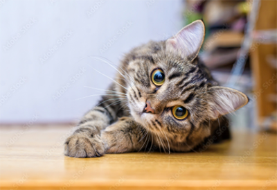
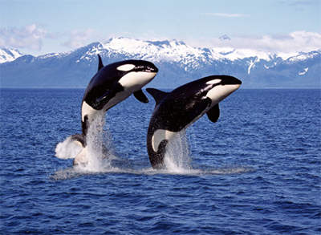

home
inspiration
top fives
Hi, I am Ling. Below are My Top 5's
Top Five Favorite Animals
Cat

Giraffe
Panda
Dinosaur
Cheetah
Top Five Favorite Whales
Orca

Humback Whale
Blue whale
Dolphin
Narwhal
Top Five Hiking Places
J V Fitzgerald Marine Reserve
is located on Moss Beach in San Mateo County, you can enjoy the beautiful scenery of the Pacific Ocean, take a walk in the cypress forest, and observe marine life on the tidal reef.
Basin Redwoods State Park
is the older state park in California. This is a great place to admire giant redwoods and banana slugs.
Sunol Regional Wilderness
has a trail that runs through rolling hills, leading to a place called Little Yosemite where there are boulders and waterfalls. During hiking, one often encounters large herds of cattle.
Año Nuevo State Park
is a famous sanctuary for elephant seal watching. You only need to hike 3-4 miles, passing by a beach and crossing a sand dune, to see large areas of elephant seals lying on the nearby beach basking in the sun.
Reinhardt Redwood Regional Park
is located east of Oakland. Every October to February, you can see thousands of ladybugs gathering on the plants along the path here.